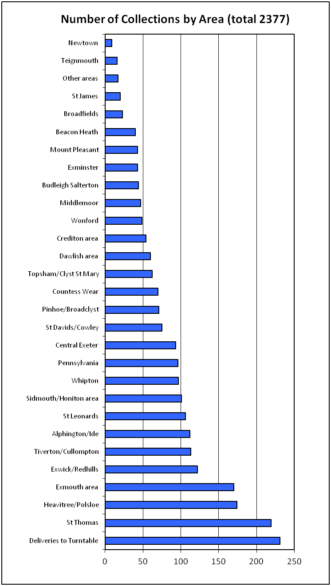
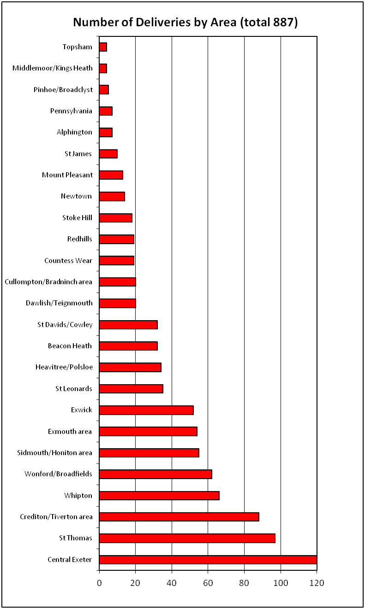

Collection & delivery statistics for the financial year 2013/14
The following graphs show how many families and individuals we have helped during the past year, and how we have helped Exeter City Council's recycling strategy in preventing so many items of furniture ending up in local land-fill sites.
 |
 |